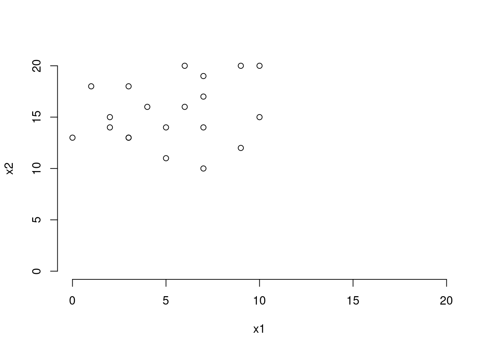
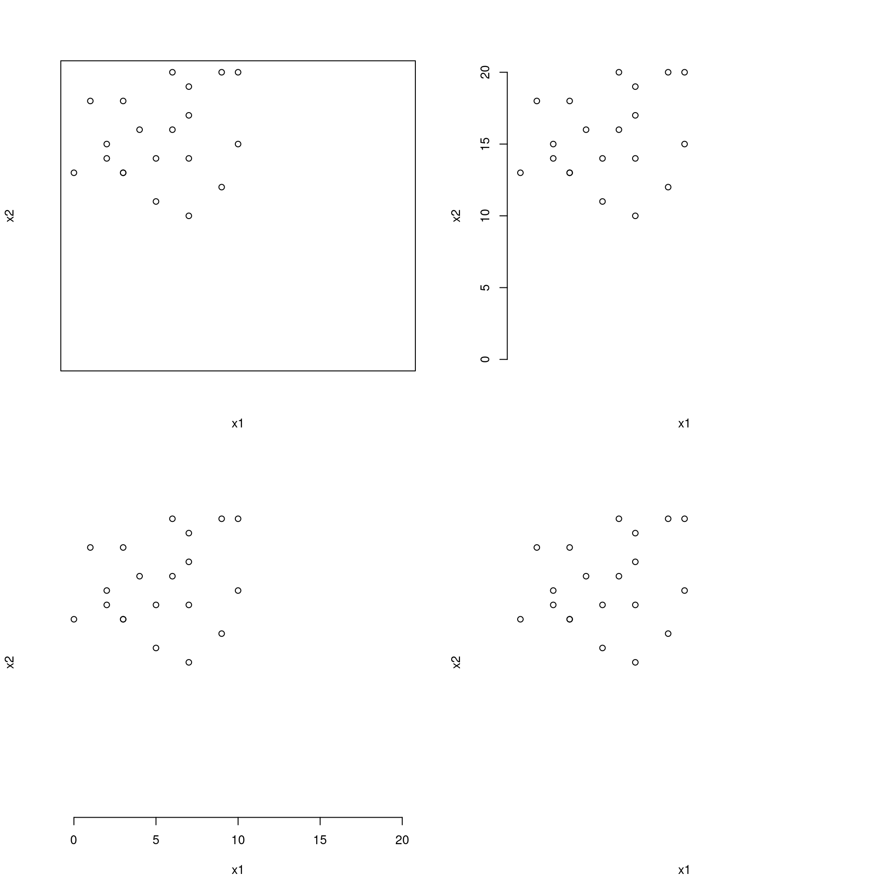
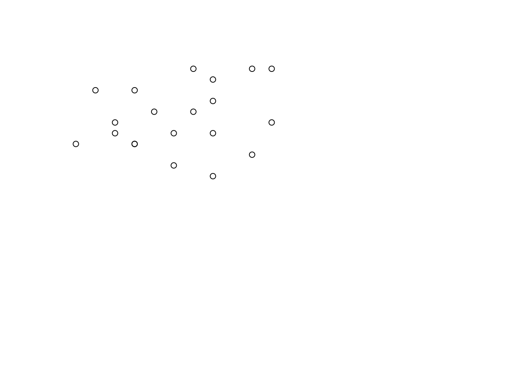
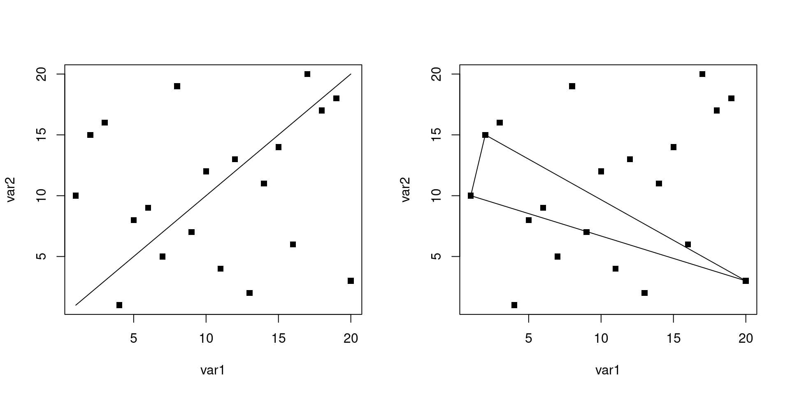
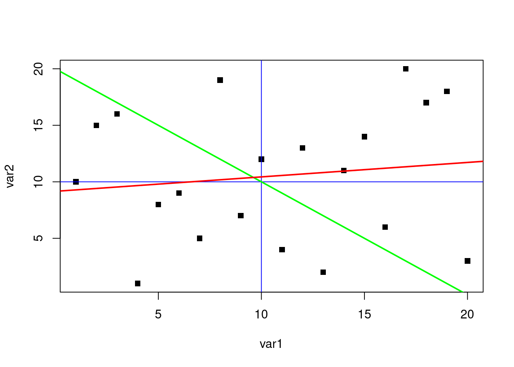
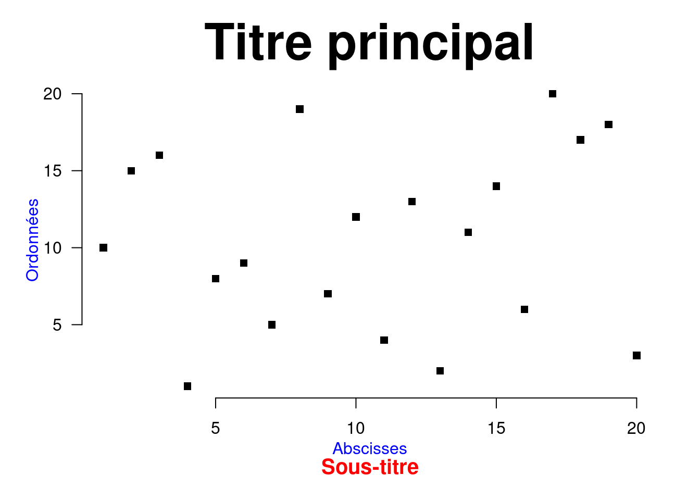
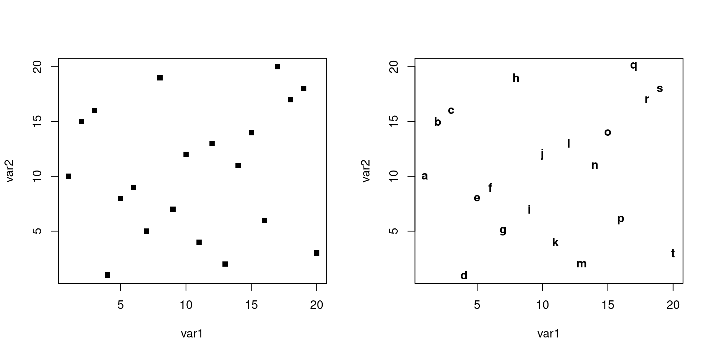
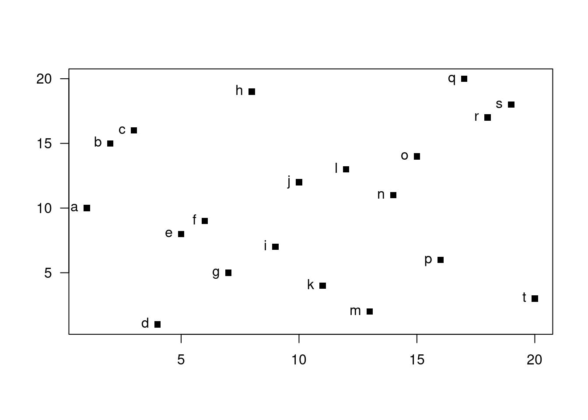
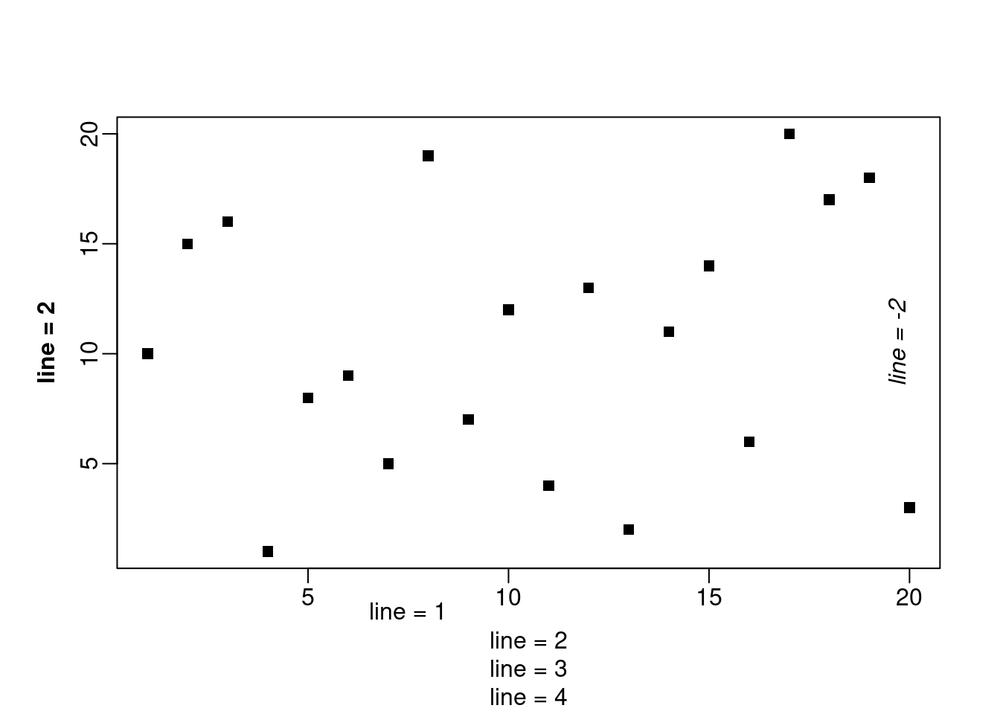

Chapitre5 Édition d’un graphique
5.1 Graphique vierge
La philosophie des auteurs en termes de graphiques sous R est simple : ajouter les éléments un à un, en commençant par ouvrir une fenêtre graphique avec des dimensions (axes et marges) choisies, mais sans que rien ne s’affiche à l’écran. Regardons donc comment créer un graphe vide.
Lorsqu’on fait appel à la fonction plot(), les axes sont déterminés automatiquement par R en fonction de l’étendue des valeurs des données que l’on souhaite représenter. Nous allons regarder comment modifier l’étendue des axes à l’aide de deux arguments : xlim et ylim.
Créons tout d’abord deux variables continues.
(x1 <- sample(x = 0:10, size = 20, replace = TRUE))
#> [1] 5 9 6 0 9 8 8 1 5 10 10 7 6 7 6 1 0 9 8 8
(x2 <- sample(x = 10:20, size = 20, replace = TRUE))
#> [1] 13 14 16 11 11 17 16 11 14 11 13 13 13 15 12 15 14 11 11 11Ces deux variables ne varient pas de la même manière. Nous allons faire deux graphes. Le premier utilisera les paramètres par défaut de R. Dans le second, nous allons fixer les axes de manière à ce qu’ils soient bornés entre 0 et 20.

Par défaut, la fonction plot() affiche une boîte autour de la région graphique. C’est l’argument bty qui défini cela. Par défaut, il prend la valeur “o”. Pour supprimer ce cadre, on peut lui attribuer la valeur “n”.

Maintenant que nous avons fixé les axes, nous allons les supprimer. Ceci n’aura aucune incidence sur l’étendue du graphe. Pour ce faire, nous allons utiliser les arguments xaxt et yaxt qui contrôlent l’affichage des axes. L’argument axes permet quant à lui de supprimer à la fois les axes, mais aussi le cadre. Comparez ces graphes suivants
par(mfrow = c(2, 2))
plot(x1, x2, xlim = c(0, 20), ylim = c(0, 20), xaxt = "n", yaxt = "n")
plot(x1, x2, xlim = c(0, 20), ylim = c(0, 20), bty = "n", xaxt = "n")
plot(x1, x2, xlim = c(0, 20), ylim = c(0, 20), bty = "n", yaxt = "n")
plot(x1, x2, xlim = c(0, 20), ylim = c(0, 20), axes = FALSE)
Poursuivons notre destruction graphique, et supprimons le nom des axes avec les arguments xlab et ylab. Par défaut, le nom des axes correspond au nom des variables. L’astuce ici consiste à leur attribuer la valeur "". Cependant, une alternative consisterait à utiliser l’argument ann qui va supprimer toute annotation dans le graphe (nom des axes, mais aussi titre et sous-titre).

Il ne nous reste plus qu’à supprimer les points avec l’argument type. Nous allons tout de même laisser le cadre afin de délimiter notre graphe.

Étant donné que nous fixons les bornes des axes, et que nous supprimons l’affichage des données, nous pourrions éviter de spécifier les données en x et en y, et simplement demander de (ne pas) représenter la valeur 0 (ou autre chose). Ainsi, l’écriture précédente pourrait se résumer à ceci (sans le cadre) :
Une particularité des programmeurs, c’est qu’il sont fainéants et s’ils peuvent économiser des lignes de code, alors ils le feront. Ainsi, nous allons créer une fonction qui implémentera un graphe vierge.
plot0 <- function(y = 0, x = y, type = "n", axes = FALSE, ann = FALSE, ...){
plot(x, y, axes = axes, type = type, ann = ann, ...)
}Par la suite, il suffira de faire appel à cette fonction pour ouvrir un nouveau périphérique graphique n’affichant rien, mais dont les dimensions auront été spécifiées.
Remarque : la fonction box permet d’afficher un cadre autour de la région du plot ("plot") ou de la figure ("figure"). Autre remarque : on pourrait utiliser cette fonction comme la fonction plot() et afficher, par ex. les données en indiquant type = "p".
5.2 Ajout de points
Pour insérer des points sur un graphe, rien de plus simple : il suffit d’utiliser la fonction points(). Celle-ci partage un très grand nombre d’arguments avec la fonction plot().
Créons trois nouvelles variables.
var1 <- seq(1, 20)
var2 <- sample(var1, 20, replace = FALSE)
var3 <- sample(var1, 20, replace = FALSE)Nous allons maintenant représenter sur le même graphe var2 en fonction de var1, puis dans un second temps var3 en fonction de var1. Nous alloir voir trois exemples pour distinguer les deux séries de valeurs.
par(mfrow = c(2, 2))
plot(var1, var2, col = "blue", main = "Couleurs")
points(var1, var3, col = "red")
plot(var1, var2, pch = 17, main = "Symboles")
points(var1, var3, pch = 15)
plot(var1, var2, cex = 1, main = "Tailles")
points(var1, var3, cex = 2)
Dans ces exemples, les trois variables présentaient la même gamme de valeurs (de 1 à 20). Si vous souhaitez superposer sur un même graphe des séries de points qui n’ont pas la même étendue de valeurs, il faudra convenablement définir les bornes des axes dans la fonction plot() avec les arguments xlim et ylim de manière à ce que toutes les séries de points s’affichent correctement.
Introduisons maintenant une commande intéressante sous R : la fonction locator(). Celle-ci permet de récupérer les coordonnées d’un (ou de plusieurs) clic(s) sur un graphique. Voici comment l’utiliser pour deux clics :
Cette fonction permet également de rajouter simultanément des points sur le graphe au fur et à mesure des clics.
Nous aurions également pu écrire :
Remarque : la sélection peut être interrompue par un clic droit. La valeur par défaut de l’argument n est de 512 (clics).
5.3 Ajout de lignes
Sous R, plusieurs fonctions permettent de tracer une ligne. Tout dépend de l’information de départ. Si on dispose des coordonnées des deux points extrêmes, nous pouvons utiliser à nouveau la fonction points(). La fonction lines() s’écrira de la même manière.
par(mfrow = c(1, 2))
plot(var1, var2, pch = 15, main = "Fonction points()")
points(x = c(1, 20), y = c(1, 20), type = "l")
plot(var1, var2, pch = 15, main = "Fonction lines()")
lines(x = c(1, 20), y = c(1, 20))
La fonction segments() s’utilise à peu de choses prêt de la même manière.
par(mfrow = c(1, 2))
plot(var1, var2, pch = 15)
segments(x0 = 1, y0 = 1, x1 = 20, y1 = 20)
plot(var1, var2, pch = 15)
segments(var1[1], var2[1], var1[2], var2[2])
segments(var1[1], var2[1], var1[20], var2[20])
segments(var1[20], var2[20], var1[2], var2[2])
Parlons maintenant de la fonction abline(). Celle-ci offre plusieurs possibilités : elle permet entre autres de tracer des lignes horizontales et verticales ainsi que des droites de régression. Mais, contrairement aux trois fonctions précédentes, qui étaient bornées aux coordonnées fournies, les droites tracées avec cette fonction s’étendront d’un bord à l’autre de la région graphique.
plot(var1, var2, pch = 15)
abline(h = 10, v = 10, col = "blue")
abline(a = 20, b = -1, col = "green", lwd = 2)
abline(reg = lm(var2 ~ var1), col = "red", lwd = 2)
Finalement, mentionnons que la fonction locator() pourra être utilisée pour tracer des lignes de manière interactive.
5.4 Ajout de polygones
Insérer une forme polygonale sur un graphe se fera à l’aide de la fonction polygon().
plot(var1, var2, pch = 15)
polygon(x = c(10, 5, 5, 10, 15, 15), y = c(5, 10, 15, 20, 15, 10))
polygon(x = c(10, 5, 15), y = c(5, 15, 15), density = 20, angle = 45)
polygon(x = c(5, 10, 15), y = c(10, 20, 10), density = 20, angle = 135)
Nous retrouvons ici des arguments vu précédemment dans d’autres fonctions. Voyons maintenant un exemple en couleurs. Nous allons générer trois variables, dont deux correspondant à deux distributions normales.
seqX <- seq(-20, 20, 0.01)
GaussA <- dnorm(seqX, mean = -2, sd = 4)
GaussB <- dnorm(seqX, mean = 4, sd = 4)Traçons ces distributions avec la fonction polygon().
plot(range(seqX), range(GaussA), type = "n")
polygon(x = seqX, y = GaussA, border = 0, col = "#FF000088")
polygon(x = seqX, y = GaussB, border = 0, col = "#0000FF88")Ici, une remarque s’impose : nous venons d’attribuer deux couleurs dans un format un peu spécial : il s’agit du format hexadécimal. Celui-ci comprend, dans sa forme minimale, six caractères précédés du symbole dièse : les deux premiers symboles reflètent la quantité de rouge, les deux suivants celle de vert, et les deux derniers la quantité de bleu. À ceci, on peut rajouter (comme nous l’avons fait) deux autres caractères représentant le degré de transparence. Nous reviendrons sur ce point dans le chapitre suivant.
Intéressons-nous maintenant à la fonction rect() qui permet de tracer un rectangle.
Remarque : la fonction locator() peut également être utilisée avec polygon(), mais pas avec la fonction rect().
Mettons à profit ce que nous venons d’apprendre avec les fonctions rect() et abline() pour personnaliser la zone de plot.
plot(0, type = "n", xlim = c(0, 20), ylim = c(0, 20), ann = FALSE, las = 1, bty = "n")
par()$usr
#> [1] -0.8 20.8 -0.8 20.8
rect(xleft = par()$usr[1], ybottom = par()$usr[3], ytop = par()$usr[4], xright = par()$usr[2], col = "lightgray", border = 0)
abline(h = seq(0, 20, by = 5), col = "white")
abline(v = seq(0, 20, by = 5), col = "white")
abline(h = seq(2.5, 17.5, by = 5), col = "white", lty = 3)
abline(v = seq(2.5, 17.5, by = 5), col = "white", lty = 3)
rect(xleft = par()$usr[1], ybottom = par()$usr[3], ytop = par()$usr[4], xright = par()$usr[2], col = 0, border = "white")
Ici, nous avons utilisé de nouveaux arguments. L’argument lty contrôle le type de ligne (1 étant un trait plein, et 3 un trait en pointillés). L’argument border = 0 indique que la couleur du contour du rectangle sera transparente. Enfin, l’argument las = 1 spécifie que les valeurs portées sur les axes seront écrites horizontalement.
Quelques précisions maintenant sur la commande par()\$usr. Nous avons défini nous-même l’étendue des axes x et y (0, 20). Cependant, par défaut, R laisse un peu de marge avant et après chaque axe (4% pour être précis). Ainsi, cette commande nous permet de récupérer les dimensions exactes (après ajout de ces 4%) de la région du plot. En attribuant la valeur “i” aux paramètres graphiques xaxs et yaxs, nous aurions supprimé cet ajout de 4%. Pour preuve :
5.5 Ajout d’une flèche
Bien que peu fréquent, nous pouvons aussi tracer des flèches. Ceci se fera avec la fonction arrows(). Nous pouvons spécifier si la flèche sera en début ou en fin de ligne (ou les deux) avec l’argument code. On peut aussi définir la longueur de la flèche et son angle par rapport au trait. Un dessin vaut mille mots, donc allons-y.
plot(0, xlim = c(0, 2), ylim = c(0, 2), type = "n", ann = FALSE)
arrows(x0 = 0, y0 = 1, x1 = 1, y1 = 2)
arrows(1, 0, 2, 1, length = 0.25, angle = 30, code = 1)
arrows(1, 0.5, 1, 1.5, length = 0.10, angle = 45, code = 3)
Nous n’en dirons pas plus sur les flèches.
5.6 Ajout d’un titre
Précédemment, nous avons vu qu’il était possible de définir un titre directement dans les High-level plotting functions. Mais, il existe aussi la fonction title() en alternative. Voici les principaux arguments de cette fonction (qui sont aussi valables pour les fonctions plot() and co.).
{ll}
Argument & Signification:
main& Titre principalsub& Sous-titrexlab& Nom de l’axe des xylab& Nom de l’axe des ycex.main& Taille du titrecex.sub& Taille du sous-titre
Utilisons ces arguments.
par(mgp = c(2, 1, 0))
plot(var1, var2, pch = 15, ann = FALSE, las = 1, bty = "n")
title(main = "Titre principal", cex.main = 3)
title(xlab = "Abscisses", ylab = "Ordonnées", col.lab = "blue")
title(sub = "Sous-titre", font.sub = 2, col.sub = "red", cex.sub = 1.25)
Nous verrons dans la section suivante qu’il est aussi possible d’ajouter des annotations dans les marges de la figure, et nous aurions pu utiliser à la place, la fonction mtext().
5.7 Ajout de texte
Intéressons-nous maintenant aux annotations textuelles. Nous distinguerons les expressions textuelles insérées dans la zone de plot de celles destinées à apparaître en dehors de cette zone, c.-à-d. dans les marges de la figure. En effet, les fonctions correspondantes ne sont pas les mêmes et ne s’écrivent pas de la même manière.
La fonction text() permet d’insérer du texte dans la région du plot. Il faudra lui fournir les coordonnées en x et en y, ainsi que l’expression textuelle à ajouter. Regardons cela au travers d’un exemple.
(nom <- letters[1 : length(var1)])
#> [1] "a" "b" "c" "d" "e" "f" "g" "h" "i" "j" "k" "l" "m" "n" "o" "p" "q" "r" "s"
#> [20] "t"
par(mfrow = c(1, 2))
plot(var1, var2, pch = 15)
plot(var1, var2, type = "n")
text(x = var1, y = var2, labels = nom, font = 2)
L’argument font contrôle la graisse du texte, c.-à-d. que le texte pourra être écrit normalement (1), en gras (2), en italique (3), etc. Ici, le texte se place exactement aux coordonnées fournies. Mais, on imagine facilement que si on superpose à la fois les points et les étiquettes, le graphique sera illisible. Heureusement, cette fonction présente l’argument pos qui contrôle le positionnement du texte par rapport aux coordonnées. Le tableau suivant fournit les valeurs possibles pour cet argument.
Valeur de pos & Signification\
- 0 & Aux coordonnées
- 1 & En-dessous des coordonnées
- 2 & À gauche des coordonnées
- 3 & Au-dessus des coordonnées
- 4 & À droite des coordonnées

Remarque : la fonction locator() pourra s’appliquer ici.
Pour rajouter du texte dans les marges, nous utiliserons la fonction mtext(). Cependant, cette fonction s’écrit différemment : l’argument side indique dans quelle marge doit être affiché le texte (1 en bas, 2 à gauche, 3 en haut, 4 à droite). L’argument line permet quant à lui de positionner le texte par rapport aux limites de la région du plot. Enfin, l’argument at permet d’indiquer la coordonnée de placement sur l’axe en question.
Vu qu’on ne fournit pas de coordonnées dans cette fonction, la fonction locator() ne fonctionnera pas.
Regardons cela avec un exemple simple.
par(mgp = c(2, .5, 0))
plot(var1, var2, pch = 15, ann = FALSE)
mtext(side = 1, line = 1, text = "line = 1", at = 7.5)
mtext(side = 1, line = 2, text = "line = 2")
mtext(side = 1, line = 3, text = "line = 3")
mtext(side = 1, line = 4, text = "line = 4")
mtext(side = 2, line = 2, text = "line = 2", font = 2)
mtext(side = 4, line = -2, text = "line = -2", font = 3)
5.8 Ajout d’une légende
Que serait un graphe sans légende ? La fonction legend() permet d’insérer une légende assez élaborée dans la région du plot et offre de nombreuses possibilités.
Tous les éléments de la légende sont modifiables, à l’exception de la police de caractères, ce qui peut être problématique si les autres éléments textuels du graphe (titre, nom des axes, etc.) n’utilisent pas la police par défaut. Nous verrons comment contourner cette difficulté plus loin.
Le positionnement de la légende peut s’effectuer de deux manières différentes :
- soit en indiquant les coordonnées x et y du coin supérieur gauche;
- soit en spécifiant un mot-clé prédéfini (top, bottom, topleft, center, etc.).
Le tableau ci-après présente les principaux arguments de cette fonction legend().
{ll}
Argument & Signification
legend& Nom des itemsbty& Type de boîte (défaut ‘o’)bg& Couleur du fond de la boîtebox.lwd& Épaisseur de la bordure de la boîtebox.col& Couleur de la bordure de la boîtetitle& Titre de la légendetitle.col& Couleur du titretext.col& Couleurs du nom des itemstext.font& Graisse du nom des itemscol& Couleurs des items (lignes ou symboles)cex& Taille des symbolespch& Symbole des itemspt.cex& Taille des symboleslty& Type de ligne (si les items sont des lignes)lwd& Épaisseur des lignes (si les items sont des lignes)ncol& Nombre de colonnes pour représenter les itemshoriz& Items répartis en lignes ou en colonnes (défaut)plot& TRUE ou FALSE
Cette fonction, si attribuée à un objet, retourne des informations intéressantes sur le positionnement et les dimensions de la légende. Regardons plutôt.
plot(var1, var2, xlim = c(0, 20), ylim = c(0, 20), pch = 15)
(leg <- legend("center", legend = c("Item 1", "Item 2"), pch = 15))
#> $rect
#> $rect$w
#> [1] 3.144531
#>
#> $rect$h
#> [1] 4.101266
#>
#> $rect$left
#> [1] 8.427734
#>
#> $rect$top
#> [1] 12.05063
#>
#>
#> $text
#> $text$x
#> [1] 9.552734 9.552734
#>
#> $text$y
#> [1] 10.683544 9.316456Les informations retournées correspondent à la boîte \$rect (largeur, hauteur, coordonnées du coin supérieur gauche) et au positionnement des différents noms des items (\$text). Regardons le comportement de quelques arguments de la fonction legend().
plot(0, xlim = c(0, 20), ylim = c(0, 20), type = "n", ann = FALSE, las = 1)
points(var1, var2, pch = 15, col = "blue")
points(var1, var3, pch = 15, col = "red")
abline(reg = lm(var2 ~ var1), lwd = 2, col = "darkblue")
abline(reg = lm(var3 ~ var1), lwd = 2, col = "orange")
abline(a = 0, b = 1, lty = 3)
legend("top", c("Var2", "Var3", "y = x", "Var2 ~ Var1", "Var2 ~ Var1"), bg = "black", col = c("blue", "red", "white", "darkblue", "orange"), pch = 15, ncol = 2, pt.cex = c(1, 1, 0, 0, 0), text.col = "white", lwd = c(0, 0, 2, 2, 2), lty = c(0, 0, 3, 1, 1), title = "LÉGENDE", cex = 0.75)5.9 Ajout d’un axe
Regardons comment ajouter des axes à un graphe. Dans un premier temps, nous allons faire un plot vide et créer nous-même les axes avec la fonction axis(). Cette fonction accepte plusieurs arguments détaillés dans le tableau suivant.
Argument & Signification
side& 1 (bas), 2 (gauche), 3 (haut), 4 (gauche)at& Coordonnées où placer la graduationlabels& Étiquettes des graduations (même longueur queat)pos& Coordonnée de position sur l’axe perpendiculairetick& TRUE ou FALSE (l’axe et la graduation ne sont pas tracés)lty& Type de ligne de l’axelwd& Épaisseur de ligne de l’axelwd.ticks& Épaisseur de ligne de la graduationcol& Couleur de l’axecol.ticks& Couleur de la graduationcol.axis& Couleur des étiquettes
plot0(xlim = c(-2, 2), ylim = c(-2, 2))
title(main = "Plot retravaillé")
grad <- seq(-2, 2, by = 0.5)
axis(side = 1, at = grad, labels = format(grad), pos = -2)
axis(side = 2, at = grad, labels = format(grad), pos = -2, las = 2)
axis(side = 1, at = seq(-1.75, 1.75, by = 0.5), pos = -2, tck = -0.01, labels = FALSE, lwd = -2, lwd.ticks = 1)
axis(side = 2, at = seq(-1.75, 1.75, by = 0.5), pos = -2, tck = -0.01, labels = FALSE, lwd = -2, lwd.ticks = 1)
mtext(side = 1, line = 1.5, text = "Axe des x", font = 2)
mtext(side = 2, line = 2.5, text = "Axe des y", font = 2, las = 0)
Ici, nous avons défini une graduation secondaire dépourvue d’étiquette sur les axes avec une graduation plus fine. Nous avons également rajouté un nom aux axes avec la fonction mtext() puisque cette option n’est pas disponible dans la fonction axis().
5.10 Ajout d’une image
Pour terminer ce chapitre, nous allons nous intéresser à l’inclusion d’une image dans un graphe. En effet, il peut être fort intéressant de pouvoir mettre une image quelconque sur un graphique. Par ex., sur une carte, il pourra s’agir de symboles divers permettant de figurer certains éléments caractéristiques (e.g. parc de stationnement, hôtel, station météo, etc.) ou des repères (e.g. nord géographique, etc.). Il pourra également s’agir du logo d’une institution, et bien d’autres.
La fonction rasterImage() du package graphics permet d’ajouter à un graphe existant une image sous forme matricielle. Il peut s’agir d’une image sous format JPEG, PNG, GIF, etc. Dans la suite, nous n’importerons que des images au format PNG. Pour ce faire, nous avons besoin de charger un package complémentaire, spécialement dédié à cette tâche : le package png.
Nous avons développé une fonction, que nous avons appelée plotimage(), basée sur la fonction rasterImage(), qui permet d’importer dans un graphe n’importe quelle image au format PNG, JPEG ou TIFF. Cette fonction permet, soit d’ajouter l’image à un graphe existant, soit de créer un nouveau graphe avec cette image. De plus, elle permet de redimensionner l’image en conservant le rapport hauteur/largeur d’origine. Le tout s’adaptant aux dimensions du graphe. Enfin, cette fonction permet de positionner l’image soit en fournissant les coordonnées du centre, soit en utilisant des positions prédéfinies (e.g. “center”, “topleft”, etc.). Notons que tous les paramètres graphiques de la fonction plot() peuvent être modifiés (dans le cas où l’image est insérée dans une nouvelle fenêtre).
Commençons par définir cette fonction dans R.
plotimage <- function(file, x = NULL, y = NULL, size = 1, add = FALSE,
angle = 0, pos = 0, bg = "lightgray", ...){
if (length(grep(".png", file)) > 0){
require("png")
img <- readPNG(file, native = TRUE)
}
if (length(grep(".tif", file)) > 0){
require("tiff")
img <- readTIFF(file, native = TRUE)
}
if (length(grep(".jp", file)) > 0){
require("jpeg")
img <- readJPEG(file, native = TRUE)
}
res <- dim(img)[2:1]
if (add){
xres <- par()$usr[2] - par()$usr[1]
yres <- par()$usr[4] - par()$usr[3]
res <- c(xres, yres)
}else{
par(mar = c(1, 1, 1, 1), bg = bg, xaxs = "i", yaxs = "i")
dims <- c(0, max(res))
plot(0, type = "n", axes = FALSE, xlim = dims, ann = FALSE,
ylim = dims, ...)
}
if (is.null(x) && is.null(y)){
if (pos == "center" || pos == 0){
x <- par()$usr[1]+(par()$usr[2]-par()$usr[1])/2
y <- par()$usr[3]+(par()$usr[4]-par()$usr[3])/2
}
if (pos == "bottom" || pos == 1){
x <- par()$usr[1]+(par()$usr[2]-par()$usr[1])/2
y <- par()$usr[3]+res[2]*size/2
}
if (pos == "left" || pos == 2){
x <- par()$usr[1]+res[1]*size/2
y <- par()$usr[3]+(par()$usr[4]-par()$usr[3])/2
}
if (pos == "top" || pos == 3){
x <- par()$usr[1]+(par()$usr[2]-par()$usr[1])/2
y <- par()$usr[4]-res[2]*size/2
}
if (pos == "right" || pos == 4){
x <- par()$usr[2]-res[1]*size/2
y <- par()$usr[3]+(par()$usr[4]-par()$usr[3])/2
}
if (pos == "bottomleft" || pos == 5){
x <- par()$usr[1]+res[1]*size/2
y <- par()$usr[3]+res[2]*size/2
}
if (pos == "topleft" || pos == 6){
x <- par()$usr[1]+res[1]*size/2
y <- par()$usr[4]-res[2]*size/2
}
if (pos == "topright" || pos == 7){
x <- par()$usr[2]-res[1]*size/2
y <- par()$usr[4]-res[2]*size/2
}
if (pos == "bottomright" || pos == 8){
x <- par()$usr[2]-res[1]*size/2
y <- par()$usr[3]+res[2]*size/2
}
}
xx <- res[1]*size/2
yy <- res[2]*size/2
rasterImage(img, x-xx, y-yy, x+xx, y+yy, angle = angle)
}Voici les différents arguments possibles pour cette fonction.
Argument & Signification\
- file & Nom de l’image à ouvrir (avec extension png)
- x & Coordonnée en x du centre de l’image
- y & Coordonnée en y du centre de l’image
- pos & Position prédéfinie. Alternative à x et y. (voir la fonction legend())
- size & Coefficient réducteur de l’image (entre 0 et 1)
- angle & Degré de rotation de l’image (entre 0 et 360)
- bg & Couleur du fond de la figure
- add & TRUE ou FALSE
- ... & Autres paramètres graphiques de la fonction plot()
Le site Web http://www.flaticon.com permet de télécharger plus de 60 000 icônes gratuitement à différentes résolutions et sous différents formats. Les images suivantes sont issues de ce site. Merci aux auteurs !
Regardons les différents placements par défaut.
par(mfrow = c(3, 3))
for (i in 0 : 8){
plotimage("./icon8.png", size = 0.25, pos = i)
box("figure")
}plot(0, type = "n", axes = FALSE, ann = FALSE)
for (i in 0 : 8)
plotimage("./icon6.png", size = 0.25, pos = i, add = TRUE)
box("figure")Pour terminer, regardons l’impact de l’angle en superposant la même image tous les 45 degrés. Les formes résultantes n’étaient pas du tout prévu par les auteurs. Et, le résultat est très surprenant et esthétique. De la pure sérendipité !!!
plot0(xlim = c(-1, 1), ylim = c(-1, 1), xaxs = "i", yaxs = "i")
for (i in seq(0, 360, 45)){
plotimage("./icon2.png", size = 0.25, add = TRUE, angle = i, x = .25, y = .25)
}
plotimage("./icon2.png", size = 0.2, add = TRUE, pos = 7)
box("figure")Un petit dernier, parce qu’on aime ça.